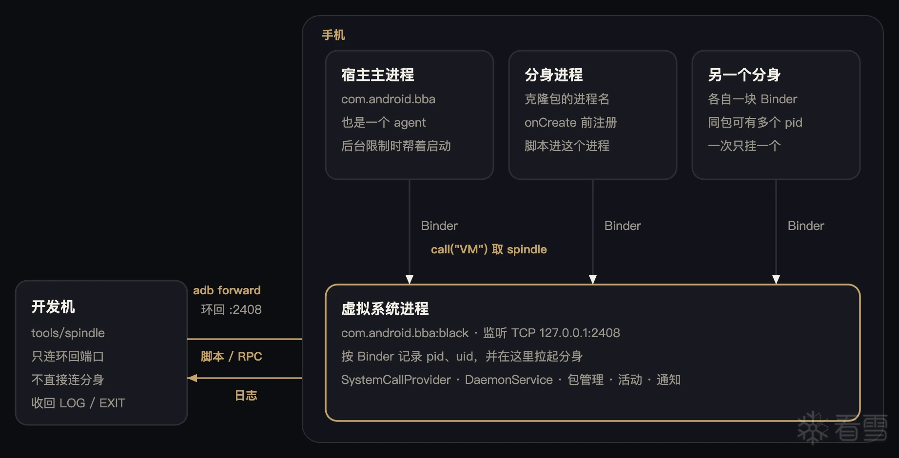

BBA：一套类 Frida，放进 BlackBox
BBA是啥
开源地址：https://github.com/openbba0/bba
Spindle 是我自己做的一套类 Frida 工具。常见的 Frida 容易被检测，所以这套按常用的 Frida JS API 重新实现，基本功能已经齐全。
它原来集成在我自己的 ROM 里，用着挺好，国内大部分应用都试过，能正常使用。集成在 ROM 上优势很多，整套系统太重，也没办法开源。
于是把 Spindle 放进 BlackBox。BlackBox 是开源的应用分身沙箱，集成之后就是现在的 BBA。
这个项目有三点优势：
- 没有 Frida 的常见特征。
- 开箱即用。不用像传统逆向那样先解锁、root、再安装 Frida。
- 能看无法解锁的设备。OPPO、vivo 这类机器上，也能分析应用的行为。
工作原理

金色线是开发机的 TCP，由 :black 接受。浅色线是 Binder：主进程和分身用 call("VM") 拿到 ISpindleService，注册之后脚本也从这条 Binder 送回来。
主进程和分身都不监听 TCP。它们用 call("VM") 取到名为 spindle 的 ISpindleService，再经 Binder 注册、收脚本。
| 角色 | 做什么 |
|---|---|
| 开发机 | tools/spindle。用 TCP 连上手机里的监听，发送脚本、RPC，并打印日志。 |
| 虚拟系统进程 | 进程名 com.android.bba:black，来自 android:process="@string/black_box_service_name"。TCP 只在这里监听。BSpindleService 和包管理、活动栈、通知一起由 SystemCallProvider 拉起。界面一启动就会来取 spindle 这个服务，所以端口在分身出现之前就已经在听。 |
| 宿主主进程 | 进程名 com.android.bba。它和其他进程一样注册成 agent，脚本通过 Binder 送进来。后台活动限制挡住 :black 的启动时，由它在界面线程上再调一次 launchApk。 |
| 分身进程 | 在 Application.onCreate 之前调用 NativeCore.spindleAgent。宿主 Context 的 call("VM") 拿到 ISpindleService，再 register。名字以 /proc/<pid>/cmdline 为准，pid 和 uid 来自 Binder.getCallingPid / getCallingUid，并且必须是宿主应用自己的 uid。 |
开发机只连 :black 的环回端口。:black 按名字把帧转给已经注册的 Binder。分身和主进程都不会再开一份 TCP 监听。进程退出时 linkToDeath 摘掉 agent，并给还挂着的开发机发 EXIT。
通道
| 通道 | 谁提供 | 谁使用 | 用途 |
|---|---|---|---|
TCP 127.0.0.1:2408 | :black | 开发机，或 adb forward 之后的本机端口 | 下发脚本、RPC、UNLOCK，回传日志 |
ISpindleService / ISpindleClient，经 call("VM") 取出，服务名 spindle | :black | 主进程和分身 | 注册、投递帧、主进程代为启动界面 |
TCP 只绑环回地址 127.0.0.1:2408。USB 调试时，tools/spindle -U 执行 adb forward tcp:0 tcp:2408，然后连本机被转发出来的端口。多台设备时用 -D <serial> 指定。单帧最大 1 MB，和一次 Binder 事务的上限对齐。
帧
两边用同一种帧：小端 4 字节长度，后面是正文。单帧最大 1 MB。有类型的帧用 3 个 ASCII 字符加一个 \0 当开头，剩下的是 JSON 或文本。脚本正文没有这个开头，整帧就是源码字节。
| 帧 | 方向 | 正文 |
|---|---|---|
HOST | 开发机 → :black | 第一帧。JSON 里可以有 target、spawn、list |
| 脚本正文 | 开发机 → 目标进程 | UTF-8 源码，没有类型前缀 |
LOG | 目标进程 → 开发机 | 一行文本。客户端打印出来，不当成 RPC 回复 |
RPC | 开发机 → 目标进程 | {"m":"方法名","a":[参数]} |
UNLOCK | 开发机 → 目标进程 | 六个字符 UNLOCK，没有 JSON。spawn 结束或连接断开时也会补一帧 |
EXIT | :black → 开发机 | agent 的 Binder 死亡时发给正在看日志的客户端 |
拉起一个分身再注入
spindle -U -f com.example.app -l script.js 走这条路。hello 里带 "spawn":true。
- 记下旧进程。
:black把这个包名已经注册过的 pid 放进 skip 列表，避免挂到上一次还没退出的分身。 - 在本进程里重启 user 0 上的这个包。
BPackageManagerService.stopPackage之后，用启动 Intent 调BActivityManagerService.startActivity。虚拟活动栈最后仍会向系统发出真正的启动；若系统因后台限制拒绝，下一步改由主进程再发一次。 - 等注册，必要时改由主进程启动。15 秒内没有新 agent，就调用主进程那块 Binder 的
launch。主进程在自己的主线程上执行原来的launchApk，最多再等 15 秒。 - 分身来注册。
onBeforeApplicationOnCreate里spindleAgent(processName)。服务端用调用方 pid 读/proc/<pid>/cmdline，并linkToDeath。 - 认领新进程。名字对得上、pid 不在 skip 里，就占用这个 agent，并回
{"ok":true}给开发机。 - 脚本字节到达分身。
ISpindleClient.onFrame在分身进程里调用NativeCore.onSpindleScript，再把LOG字节交回:black，由它写进开发机的 TCP。 - 开发机发送
UNLOCK。客户端在脚本和--call之后发送。连接断开时:black也会补一帧。分身收到后不做别的事。
注册不会挡住分身的启动线程。
Application.onCreate不会等脚本。脚本是注册完成之后，经 Binder 送到分身的。
挂到已经在跑的进程
-n com.example.app 或位置参数给出进程名，hello 里没有 spawn。:black 不启动应用，只在已经注册的 agent 里挑一个。没有匹配时返回 no such agent。该进程已经有一条开发机连接时返回 agent busy。一个 agent 同时只服务一个 host。
-p 1234 把目标写成 pid:1234，只按 pid 匹配。spawn 不能用 pid，因为新进程的 pid 当时还不知道。
主进程自己也是一个 agent，名字是 com.android.bba。挂到它和挂到分身一样，帧经 onFrame 送进那个进程。
--list 或 spindle-ps 发送 {"list":true}。回复是 {"ok":true,"agents":[{"name","pid","uid"}, ...]}，发完就关连接。
怎么选进程
目标先按完整字符串比。比不上时，取冒号前的包名再比，所以 com.example.app 可以命中 com.example.app:push。精确命中优先于包名命中。同一级里，spawn 要 pid 最大的那个（刚拉起来的），attach 要 pid 最小的那个。
脚本落到哪
NativeCore.onSpindleScript 把字节按 UTF-8 转成字符串。如果有人调用过 setScriptHandler，就在当前线程回调 onScript。没有 handler 时，只打一条日志。
脚本到达进程后，
NativeCore.onSpindleScript先交给已注册的ScriptHandler，再调用spindleRunJs。arm64 上由 QuickJS 执行，提供Interceptor、Stalker、Java、Memory、Process和console。console.log经onSpindleLog回到:black，再写进开发机的 TCP。RPC 调用rpc.exports。工程只编译 arm64，所以发布的 APK 带这个运行时；非 arm64 的构建会回{"ok":false,"e":"js runtime is not in bba"}。
命令行
python3 tools/spindle -U -f com.example.app -l tools/test_js_api.js python3 tools/spindle -U -n com.example.app -l tools/test_native_hook.js python3 tools/spindle -D <serial> -p 1234 -e 'console.log(1)' python3 tools/spindle -H 127.0.0.1:2408 -n com.android.bba --list python3 tools/spindle-ps -U
-l 可以重复，文件按顺序拼成一份源码。-e 追加在文件后面。--call 方法名 --args '["a",1]' 在源码发出之后调用，--args 必须是 JSON 数组，和 --call 按顺序配对。客户端开了 TCP keepalive。spawn 的连接超时是 45 秒，attach 是 15 秒。连上之后 follow 会一直打印 LOG，直到对端关掉或收到 EXIT。
依据 core/src/main/cpp/hook/spindle_server.cpp、BSpindleService 和 tools/spindle。